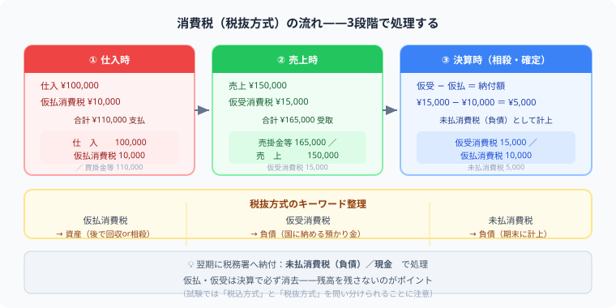

消費税の仕訳（税抜方式）とは？
仮払消費税・仮受消費税を例題3問で完全解説
- 仕入時→仮払消費税（資産）、売上時→仮受消費税（負債）を別々に記録するのが税抜方式の基本
- 決算時——仮受消費税と仮払消費税を相殺し、差額を「未払消費税」（負債）として計上
- 消費税は本体金額と分けて記録——仕入（本体）と仮払消費税（税）を同時に仕訳する
- 試験では税抜方式のみ出題——税込方式は「問題文に指定がないとき」と覚えれば迷わない
こんにちは、大谷です！初めて簿記の「消費税（税抜方式）」を習ったとき、僕は本気で「なんじゃこりゃ……！」と脳内パニックを起こしました。だって、お店で商品をひとつ買っただけなのに、仕訳の中に【仕入】と【仮払消費税】という2つの科目が同時に出現するんです。「え、ただ買っただけなのに、なんで科目が2つに分裂するの！？」と、教科書を二度見しました（笑）。
でもこれ、正体は「国に対する預かり金」と「先払いスタンプ」の2つのドラマが同時進行しているだけなんです。売上のときは、お客さんから消費税を"預かって"いるだけ。仕入のときは、将来の納税額から差し引ける"先払いスタンプ"を押しているだけ。この2つのストーリーが決算日にガチャンとぶつかり合って、最終的な納付額が決まる——そう気づいた瞬間、一気にゲーム感覚で腹落ちしました。今日は僕がつまずいたその瞬間をそのまま攻略法に変換してお届けします！
また、記事の末尾のほうにある【いいねボタン】をポチッと押してもらえると、めちゃくちゃ励みになりますしすごく嬉しいです！それでは、一緒に攻略していきましょう！
簿記3級では消費税の処理として税抜方式を学びます。仕入のたびに「仮払消費税（資産）」、売上のたびに「仮受消費税（負債）」を計上し、決算時に差し引いた金額を納付します。
💡 ① 税抜方式の基本的な考え方——本体価格と消費税を分けて記録する理由

税抜方式では、消費税を仮払消費税（資産）と仮受消費税（負債）に分けて記録します。
売上から受け取った消費税は「お客様から預かっているもの」で、後で国に納めます。仕入で支払った消費税は「先払いした分」として後で差し引けます。
試験本番で一番の罠は、問題文に「税込総額 ¥132,000」としか書かれていないパターンです！ここでパニックになってはいけません。電卓を取り出したら、まず総額に【÷ 1.1】をしてください。一瞬で本体価格の「120,000」が出ます！あとは総額から本体を引けば、消費税の「12,000」がパズル感覚でブチ抜けます。この「÷1.1ハック」だけで、本番の計算ミスは100%ゼロになりますよ！
📝 ② 仕入時・売上時の仕訳——仮払消費税と仮受消費税をどのタイミングで計上するか
仕入時——仮払消費税（資産）を本体と同時に計上する
商品 ¥100,000（税抜）を仕入れ、消費税10% ¥10,000 とともに現金で支払った（合計 ¥110,000）。
売上時——仮受消費税（負債）を本体と同時に計上する
商品 ¥200,000（税抜）を売り上げ、消費税10% ¥20,000 とともに現金で受け取った（合計 ¥220,000）。
📊 ③ 決算時の処理——仮受消費税と仮払消費税を相殺して納付額を確定させる
決算時に「仮受消費税」から「仮払消費税」を差し引いた金額が納付すべき消費税です。差額を「未払消費税（負債）」に振り替えます。
税込方式では消費税を分けず、売上・仕入に含めてしまいます。3級の試験では問題文に「税抜方式（または控除対象外消費税なし）」と指定があれば税抜方式で処理します。
✏️ ④ 総合例題——仕入から決算・納付まで一連の流れを通しで解く
当期の取引は次のとおりでした（税抜方式、消費税率10%）。
・仕入 合計 ¥500,000（税抜）→ 仮払消費税 ¥50,000
・売上 合計 ¥800,000（税抜）→ 仮受消費税 ¥80,000
決算で消費税を確定させなさい。
📋 まとめ：消費税（税抜方式）早見表
ここまで読んでくれて本当にありがとうございます！この記事が少しでも役に立ったら、僕の毎日の執筆モチベーション維持のために、この下にある【いいねボタン】をポチッと押してもらえると、めちゃくちゃ嬉しいです！
よくある質問
消費税の税込処理と税抜処理の違いは何ですか？
税込処理は消費税を売上・仕入に含めて処理する方法です。税抜処理（税抜方式）は消費税を「仮払消費税」「仮受消費税」として分離して記録します。日商簿記3級では税抜方式を学び、問題文に「税抜方式」の指定がある場合に使います。
仮払消費税と仮受消費税はいつ消えますか？
決算整理で「仮受消費税 ／ 仮払消費税・未払消費税」という仕訳を行うことで両方消えます。差額の未払消費税（負債）が残り、翌期に現金で納付する際に「未払消費税 ／ 現金」で解消されます。
3級の試験では税込・税抜どちらで処理しますか？
問題文に「税抜方式」または「控除対象外消費税なし」と指定がある場合は税抜処理です。指定がなければ税込処理で解きます。問題文の指示を必ず最初に確認しましょう。